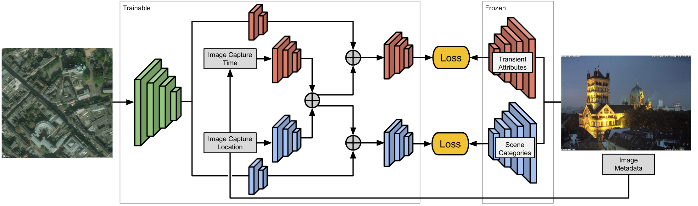

Content-Aware Detection of Temporal Metadata Manipulation [PDF],[Code],[SUPP],[Project Page] Learning a Dynamic Map of Visual Appearance  [PDF],[SUPP],[Project Page] Joint 2D-3D Breast Cancer Classification [PDF] Learning Geo-Temporal Image Features [PDF] A multimodel Approach To Mapping Soundscapes [PDF],[Project Page] Analyzing Human Appearance as a Cue for Dating Images [PDF],[ Project Page]